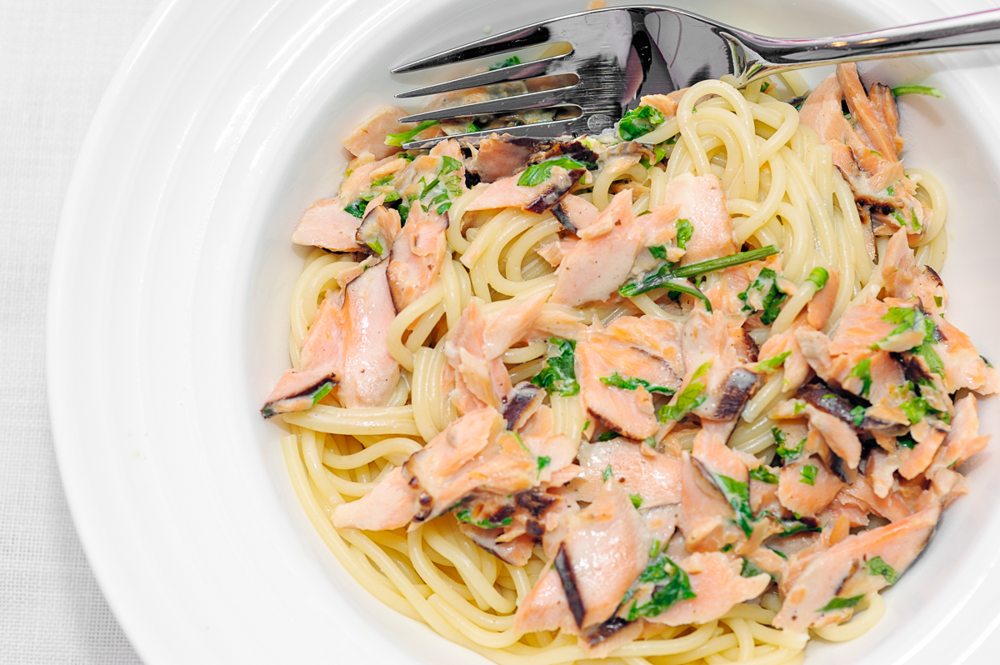

Legit hyvä savulohipasta

Savulohipasta on maukas ja terveellinen sekä ennen kaikkea helppo ruoka hyvillä rasvoilla. Reseptin avulla saat parhaan tehtyä.
Ainexet:
- 200g savustettua kirjolohta
- 250g pastaa
- 1 pieni sipuli
- 2dl ruokakermaa
- 1/2tl suolaa
- 1/4tl pippuria
- 1/2dl tilliä
Ohjeet:
- Keitä pasta 12min ajan
- Poista lohen nahka ja leikkaa pieniksi paloiksi
- Kuullota sipuli parin minuutin ajan rasvassa
- Lisää ruokakerma ja kiehauta. Mausta pippurilla ja suolalla
- Lisää savulohipalat kastikkeeseen
- Lisää tilli ja kaada kastike pastan joukkoon